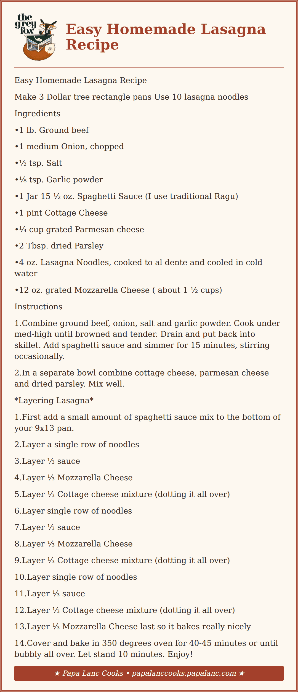

WELCOME
Easy Homemade Lasagna Recipe
Make 3 Dollar tree rectangle pans Use 10 lasagna noodles
Ingredients
•1 lb. Ground beef
•1 medium Onion, chopped
•½ tsp. Salt
•⅛ tsp. Garlic powder
•1 Jar 15 ½ oz. Spaghetti Sauce (I use traditional Ragu)
•1 pint Cottage Cheese
•¼ cup grated Parmesan cheese
•2 Tbsp. dried Parsley
•4 oz. Lasagna Noodles, cooked to al dente and cooled in cold water
•12 oz. grated Mozzarella Cheese ( about 1 ½ cups)
Instructions
1.Combine ground beef, onion, salt and garlic powder. Cook under med-high until browned and tender. Drain and put back into skillet. Add spaghetti sauce and simmer for 15 minutes, stirring occasionally.
2.In a separate bowl combine cottage cheese, parmesan cheese and dried parsley. Mix well.
*Layering Lasagna*
1.First add a small amount of spaghetti sauce mix to the bottom of your 9x13 pan.
2.Layer a single row of noodles
3.Layer ⅓ sauce
4.Layer ⅓ Mozzarella Cheese
5.Layer ⅓ Cottage cheese mixture (dotting it all over)
6.Layer single row of noodles
7.Layer ⅓ sauce
8.Layer ⅓ Mozzarella Cheese
9.Layer ⅓ Cottage cheese mixture (dotting it all over)
10.Layer single row of noodles
11.Layer ⅓ sauce
12.Layer ⅓ Cottage cheese mixture (dotting it all over)
13.Layer ⅓ Mozzarella Cheese last so it bakes really nicely
14.Cover and bake in 350 degrees oven for 40-45 minutes or until bubbly all over. Let stand 10 minutes. Enjoy!

WELCOME
Converted from the original file for viewing — open/download the original to edit it.